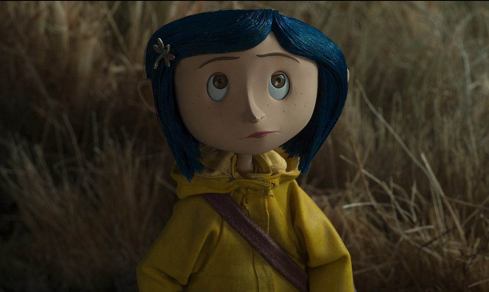

PERSONNAGE PRINCIPAL
Coraline Jones
Curieuse, indépendante et toujours prête à explorer, Coraline est une jeune fille qui vient d'emménager avec ses parents.
Lorsqu'elle découvre une petite porte menant vers un autre monde, sa curiosité la pousse à aller beaucoup plus loin qu'elle ne l'aurait imaginé.